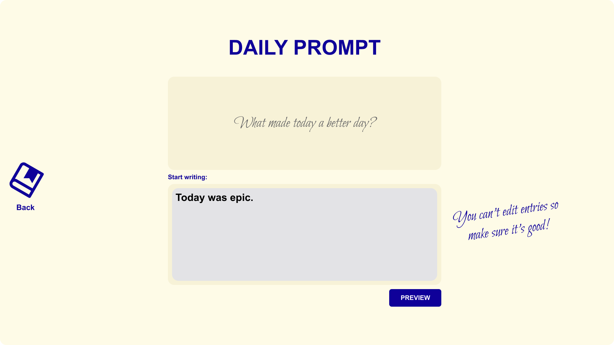

Dear Diary App
As described on the previous page, MuviCo is a browser-based application that provides versatile visual elements and support functions for live music performances. It is built to give both musicians and audiences a seamless, engaging experience. An introduction video is available on the landing page.
MuViCo is open-source software developed by Computer Science students at the University of Helsinki. I was part of the fifth team to work on the project. Earlier teams had already implemented the application's core functions, so our job was to add new features and improve the overall user experience. The application still felt like an MVP, and we were determined to change that.
We began by getting to know the existing codebase. This was daunting at first: I had never worked on someone else's code before, and part of the stack was new to me. Once I felt comfortable with the stack and had shipped a few features, I moved on to the visual side of the application.
As a team, we sketched ideas for a visual overhaul of the application's main view on paper, and I then built the prototype in Figma. Along the way I learned a great deal about the design process. After that, we implemented the new design in the application itself. Watching our ideas come to life and seeing the effect on usability was especially rewarding.
Overall, MuViCo was a rewarding learning experience, and I enjoyed working with such kind and talented people.
muvico.live

